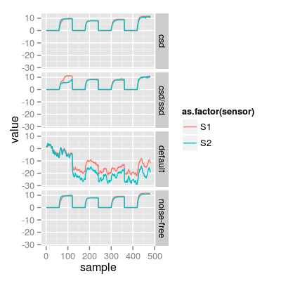

Demo SensorNoise.
# sensor array sa <- SensorArray(tunit = 60, num = 1:2, csd = 2, ssd = 5, dsd = 1) # concentration input sc <- Scenario(T = c("A", "B", "C", "B, C"), tunit = tunit(sa)) conc <- getConc(sc) # replicas of `sa` sa1 <- sa dsd(sa1) <- 0 sa2 <- sa ssd(sa2) <- 0 dsd(sa2) <- 0 sa3 <- sa csd(sa3) <- 0 ssd(sa3) <- 0 dsd(sa3) <- 0 # sensor array data sdata0 <- predict(sa, conc = conc) sdata1 <- predict(sa1, conc = conc) sdata2 <- predict(sa2, conc = conc) sdata3 <- predict(sa3, conc = conc) # plot conc. matrix mf <- melt(conc, varnames = c("sample", "gas")) p1 <- ggplot(mf, aes(x = sample, y = value)) + geom_line(aes(color = gas)) p1# plot sensor array data mf0 <- melt(sdata0, varnames = c("sample", "sensor")) mf1 <- melt(sdata1, varnames = c("sample", "sensor")) mf2 <- melt(sdata2, varnames = c("sample", "sensor")) mf3 <- melt(sdata3, varnames = c("sample", "sensor")) mf <- rbind(data.frame(mf0, array = "default"), data.frame(mf1, array = "csd/ssd"), data.frame(mf2, array = "csd"), data.frame(mf3, array = "noise-free")) p3 <- ggplot(mf, aes(x = sample, y = value)) + geom_line(aes(color = as.factor(sensor))) + facet_grid(array ~ .) p3